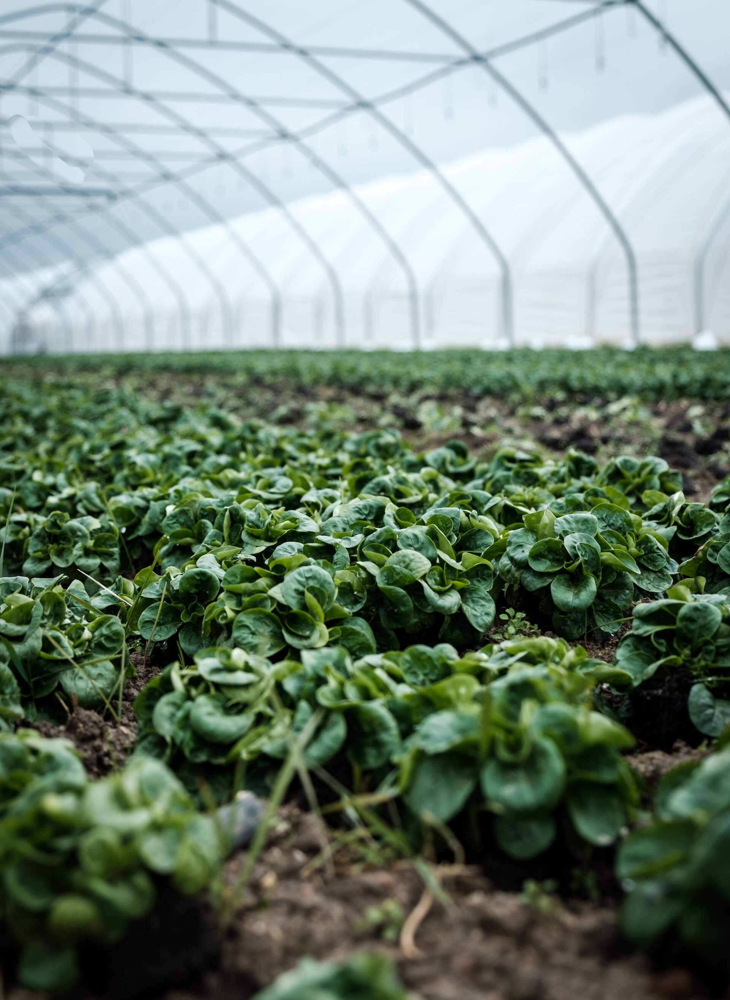
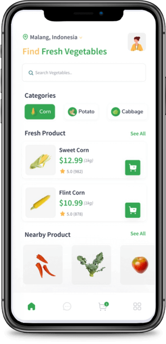
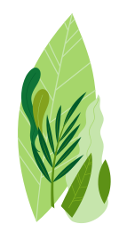
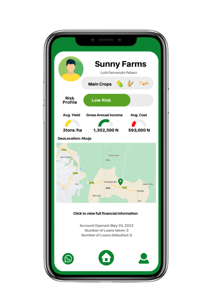
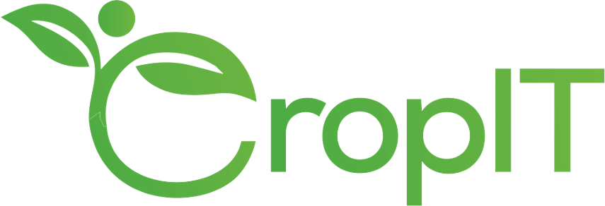

Invest with Impact.
Harnessing the power of decentralized finance to generate meaningful impact around the world.
What we offer.
Agrifi gives the opportunity for people around the world to place their capital in lending pools to earn attractive returns with many layers of security all while transforming the lives of millions across Africa.
01
Agricultural insurance is required
All our farmers are required to take out agricultural insurance protecting them from floods and other occurances to take part in the program.
02
Pre-Matching Buyers for Crops
Reducing investment risk for farmers. Ready database of buyers for the crops to ensure the market will always be available to our end users.
03
First Loss Credit Guarantee
Lowering risk for investors for farmers. USAID and it's DFT partner cover 50-75% of your investment in events of default and all it's cases.
04
Constant Monitoring of Farmers
Ensuring quality & yield. Reputable extension partners on the ground using new technologies like satellite imagery & soil biopsies to track your investments.
How Agrifi is changing the agro-financing game
AgriFi connects small-holding farmers left behind by traditional financial institutions with people around the world to provide easy and fair access to the capital they need to grow their crops. So that those who feed us can expand their wealth and reinvest in the community.
While 70% of Nigeria's 38 million smallholding farmers struggle to secure financing, approximately $1 trillion is invested in cryptocurrencies with little impact in the real world. AgriFi connects this new supply of capital with demand in places where it makes a real difference.
By providing high-level KYC and farm monitoring, loan guarantee protections, and agricultural insurance through distinguished partners on the ground, we've created the conditions for decentralized finance to create impact in the real world.


Why AgriFi?
Nearly 1 trillion USD is tied up in mostly useless cryptocurrencies, leaving eager investors without a real impact, while 70% of the 38 million small-holding farmers in Nigeria face challenges in building wealth and expanding their businesses due to limited access to capital.
AgriFi connects this supply of capital with the demand for it in places where it can make a real difference, and even earn an attractive return.
By providing high-level KYC and monitoring, securing loan guarantee protections from global institutions, requiring agricultural insurance, and organizing the agricultural market on our platform, we create a safe and attractive investment environment.



How it works
AgriFi is built on a unique blockchain infrastructure called ToroNet, specifically designed to solve real-world problems at scale. The project leverages the full power of tokenization, including zero-knowledge proof KYC technologies, to enable the creation of a digital yet verifiable business profile for farmers, solving the problem of access to capital, inputs, and, offtake all in one place.
Aggregate lending pools powered by smart contracts enable farmers to get funded while providing industry-standard insurance and KYC solutions. The money from the lending pools can only be used by farmers to purchase the inputs needed for their crops. At the end of the harvest cycle, the off-takers sell the produce and credit the smart contracts that distribute the revenue to all parties involved.
With the support of a consortium of partners convened by USAID's Feed the Future Program, AgriFi provides rural farmers with digital extension and financial literacy workshops.
Our Partners


In Voriancorelli, we have always believed that the solution to fundamental problems in the food sector in Africa lies in connecting all the dots effectively and efficiently.